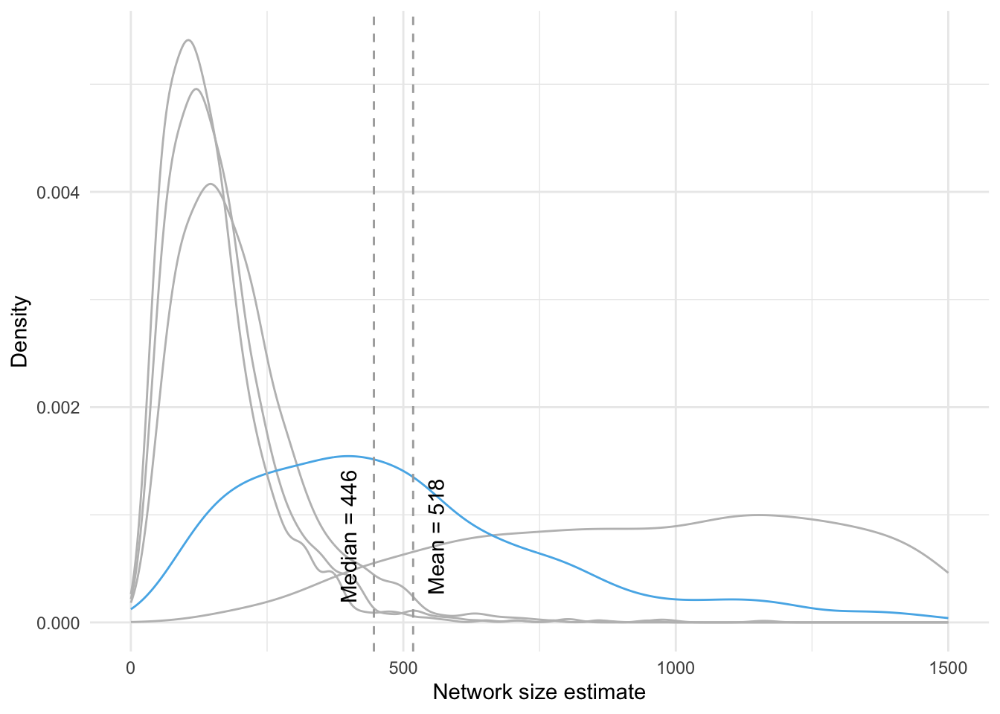
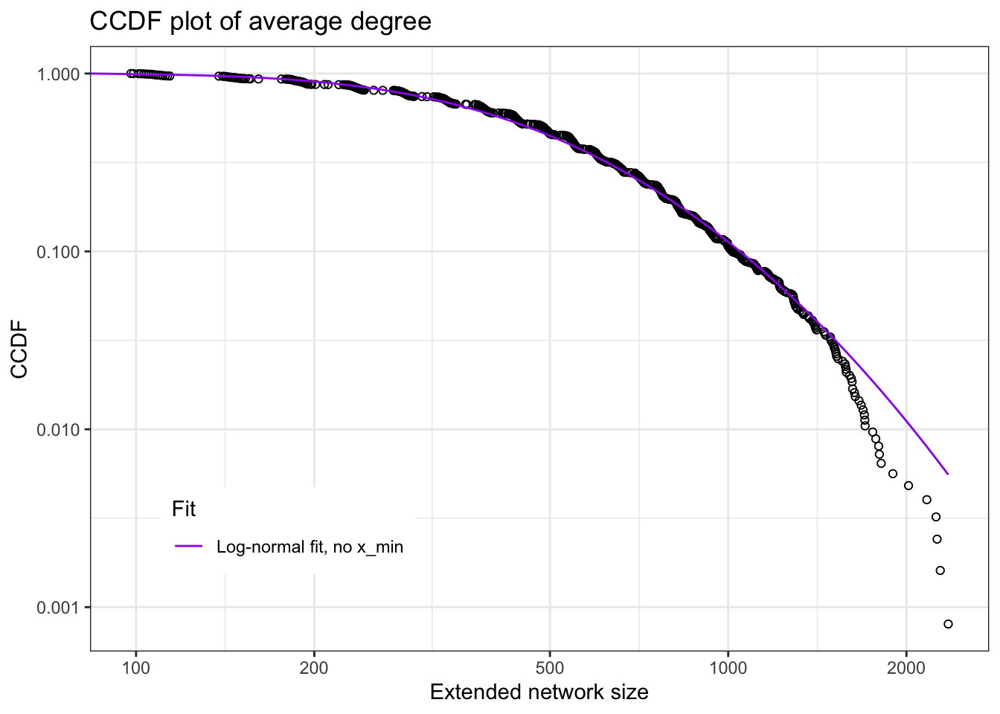

Descriptive analyses
Bas Hofstra
Last compiled on November, 2024
This is the code with which we render our descriptive analyses
1 Initatiating R environment
Start out with a custom function to load a set of required packages.
# packages and read data
rm(list = ls())
# (c) Jochem Tolsma
fpackage.check <- function(packages) {
lapply(packages, FUN = function(x) {
if (!require(x, character.only = TRUE)) {
install.packages(x, dependencies = TRUE, repos = "http://cran.us.r-project.org")
library(x, character.only = TRUE)
}
})
}
packages = c("haven", "coda", "matrixStats", "parallel", "MASS", "doParallel", "dplyr", "cowplot", "tidyverse",
"naniar", "dotwhisker", "gt", "reshape2", "VGAM", "expss", "Hmisc", "poweRlaw", "fitdistrplus", "grid",
"ggplotify", "smplot2")
fpackage.check(packages)#> [[1]]
#> NULL
#>
#> [[2]]
#> NULL
#>
#> [[3]]
#> NULL
#>
#> [[4]]
#> NULL
#>
#> [[5]]
#> NULL
#>
#> [[6]]
#> NULL
#>
#> [[7]]
#> NULL
#>
#> [[8]]
#> NULL
#>
#> [[9]]
#> NULL
#>
#> [[10]]
#> NULL
#>
#> [[11]]
#> NULL
#>
#> [[12]]
#> NULL
#>
#> [[13]]
#> NULL
#>
#> [[14]]
#> NULL
#>
#> [[15]]
#> NULL
#>
#> [[16]]
#> NULL
#>
#> [[17]]
#> NULL
#>
#> [[18]]
#> NULL
#>
#> [[19]]
#> NULL
#>
#> [[20]]
#> NULL
#>
#> [[21]]
#> NULLrm(packages)
load("data/dutch_netsize_analyses.rda")2 Descriptives independent variables
The code below generates the descriptive values which are used for Tables 1 and 2.
# descriptive table not automated: TABLE 1
table(df$work)#>
#> 0 1
#> 583 666psych::describe(df$work)#> vars n mean sd median trimmed mad min max range skew kurtosis se
#> X1 1 1249 0.53 0.5 1 0.54 0 0 1 1 -0.13 -1.98 0.01psych::describe(df$hhsize)#> vars n mean sd median trimmed mad min max range skew kurtosis se
#> X1 1 1249 2.13 1.12 2 1.98 1.48 1 8 7 1.34 2.26 0.03table(df$migr3)#>
#> 1 2 3
#> 1131 62 56# 1 Maj 2 west 3 nonwest
table(df$agecat)#>
#> >65 18-30 31-45 46-65
#> 299 208 230 512table(df$income)#>
#> 1 2 3
#> 627 440 182# 1 < modal 2 > modal 3 unknown
psych::describe(df$worthhouse)#> vars n mean sd median trimmed mad min max range skew kurtosis se
#> X1 1 1249 2.67 0.89 2.54 2.58 0.73 0.95 9.96 9.01 1.75 7.12 0.03table(df$woman)#>
#> 0 1
#> 609 640psych::describe(df$woman)#> vars n mean sd median trimmed mad min max range skew kurtosis se
#> X1 1 1249 0.51 0.5 1 0.52 0 0 1 1 -0.05 -2 0.01table(df$opl)#>
#> 3 1 2
#> 644 292 313# 1 prim/sec 2 lower tert 3 higher tert
# psych::describe(df$neighdens)
# this is for the correlation table df$educ3 <- df$opl df$educ3 <-
# as.numeric(as.character(df$educ3))
cor(as.matrix(df[df$income != 3, c("income", "worthhouse")]))#> income worthhouse
#> income 1.0000000 0.2016649
#> worthhouse 0.2016649 1.0000000# rcorr(as.matrix(df[,c('work', 'hhsize', 'leeftijd10', 'woman', 'educ3', 'neighdens', 'worthhouse'
# )]), type = 'pearson')3 Comparing naive estimations
The code below generates Figure 1 from the paper and runs a number of correlations found on page X.
# comps <- gather(df[, c('nsize_naive', 'nsize_b1b2', 'nsize_b3', 'nsize_n1', 'nsize_n2',
# 'nsize_n3', 'nsize_n123')]) comparisons <- ggplot(comps[comps$value < 2000, ], aes(x=value, color
# = key)) + geom_density(size = 0.5) + theme_minimal() + labs(x = 'Network size estimate', y =
# 'Density') + scale_color_manual(name = 'Estimation scenario', breaks = c('nsize_naive',
# 'nsize_b1b2', 'nsize_b3', 'nsize_n1', 'nsize_n2', 'nsize_n3', 'nsize_n123'), labels = c('Naive
# estimator: all X's', 'Battery 1: Tert. educ., elec vehicle, etc.', 'Battery 2: all names', 'Names
# 1: Sophie, Anna, Thomas, Willem', 'Names 2: Julia, Elisabeth, Max, Ali', 'Names 3: Sanne,
# Cornelia, Kevin, Mohammed', 'Names1+2+3'), values = c('#000000', '#E69F00', '#56B4E9', '#009E73',
# '#0072B2', '#D55E00', '#CC79A7', 'darkgrey')) # save ggsave('output/comparisons.pdf', plot =
# comparisons, device = 'pdf', scale = 1, width = 10, height = 5.5, units = c('in'), dpi =
# 'retina') # # correlation battery 1 and 2 # cor(df$nsize_b1, df$nsize_b2) # # # correlation
# battery 1 and all # cor(df$nsize_b1, df$nsize_naive) # correlation battery 1+2 and all
# cor(df$nsize_b1b2, df$nsize_naive) # correlation battery 3 (names) and all cor(df$nsize_b3,
# df$nsize_naive) # correlation names 1 and all cor(df$nsize_n1, df$nsize_naive) # correlation
# names 2 and all cor(df$nsize_n2, df$nsize_naive) # correlation names 3 and all cor(df$nsize_n3,
# df$nsize_naive) # correlation names 123 and all cor(df$nsize_n123, df$nsize_naive) # sample 5
# columns of scenarios and correlate with naive estimand set.seed(1987) sample(13:183, 5) #
# correlation scenario 85 and naive cor(df$nsize_naive, df[, 85]) # correlation scenario 36 and
# naive cor(df$nsize_naive, df[, 36]) # correlation scenario 150 and naive cor(df$nsize_naive, df[,
# 150]) # correlation scenario 14 and naive cor(df$nsize_naive, df[, 14]) # correlation scenario
# 125 and naive cor(df$nsize_naive, df[, 125]) comparisons4 Comparing Bayesian estimations
The code below generates Figure 2 from the paper associated with the text on page X.
# netsizes <- read.table(file = 'data/dutch_netsize_desc.txt') # VIZ of netsize netsize_l <-
# gather(netsizes) dens1 <- ggplot(netsize_l[netsize_l$value < 2000,], aes(x=value, color = key)) +
# geom_density(alpha = .2, size = 0.1) + theme_minimal() + theme(legend.position = 'none') + labs(x
# = 'Network size estimate', y = 'Density') +
# geom_vline(xintercept=as.numeric(psych::describe(netsize_l[, 2])[3]), color = 'darkgrey',
# linetype = 2) + geom_vline(xintercept=as.numeric(psych::describe(netsize_l[, 2])[5]), color =
# 'darkgrey', linetype = 2) + annotate('text', x = 490, y = 0.0004, color = 'darkgrey', angle = 90,
# label = paste0('Mean = ', round(as.numeric(psych::describe(netsize_l[, 2])[3]), digits = 0))) +
# annotate('text', x = 340, y = 0.0004, color = 'darkgrey', angle = 90, label = paste0('Median = ',
# round(as.numeric(psych::describe(netsize_l[, 2])[5]), digits = 0))) + ggtitle('B) Distribution of
# network sizes, all scenarios') # Get lower triangle of the correlation matrix
# get_lower_tri<-function(cormat){ cormat[upper.tri(cormat)] <- NA return(cormat) } mat <-
# cor(netsizes) lower_tri <- get_lower_tri(mat) melted_cormat <- reshape2::melt(lower_tri) #
# data.table also has melt funciton that won't work on matrices melted_cormat$Var2 <-
# as.character(melted_cormat$Var2) melted_cormat$Var1 <- as.character(melted_cormat$Var1)
# melted_cormat <- melted_cormat[!melted_cormat$Var2 == melted_cormat$Var1,] melted_cormat <-
# melted_cormat[!is.na(melted_cormat$value), ] # Viz of correlations between netsize estimates
# dens2 <- ggplot(melted_cormat, aes(x=value)) + geom_density(size = 0.3) + xlim(0.915, 1) +
# theme_minimal() + labs(x='Pearson correlation', y = 'Density') + geom_vline(xintercept = .95,
# color = 'darkgrey', linetype = 2) + ggtitle('A) Distributions of correlations between network
# size scenarios') + geom_segment(x = 0.95, y = 125, xend = .99, yend = 125, linetype = 2, color =
# 'darkgrey', arrow = arrow(length = unit(0.25, 'cm'))) + annotate('text', x = .97, y = 135, color
# = 'darkgrey', angle = 0, label = paste0(round(nrow(melted_cormat[melted_cormat$value > .95,
# ])/nrow(melted_cormat)*100, digits = 1),'% of correlations are > .95')) # lay 'm out on the grid
# denses <- plot_grid(dens2, dens1, nrow = 1) # save ggsave('output/densities.pdf', plot = denses,
# device = 'pdf', scale = 1, width = 12, height = 4, units = c('in'), dpi = 'retina') # denses5 Comparing four different estimation scenarios
The code below generates Figure X from the paper associated with the text on page X.
# VIZ of netsize
netsize_l <- gather(df[, c("netsover1", "netsover2", "netsover3", "netsover4")])
round(summary(df$netsover2)[3], digits = 0)#> Median
#> 246round(summary(df$netsover2)[4], digits = 0)#> Mean
#> 282dens1 <- ggplot(netsize_l, aes(x = value, color = key)) + geom_density(alpha = 0.2, size = 0.5) + theme_minimal() +
theme(legend.position = "none") + labs(x = "Network size estimate", y = "Density") + scale_color_manual(values = c("grey",
"#56B4E9", "grey", "grey")) + geom_vline(xintercept = 246, color = "darkgrey", linetype = 2) + geom_vline(xintercept = 282,
color = "darkgrey", linetype = 2) + annotate("text", x = 350, y = 8e-04, color = "black", angle = 90,
label = "Mean = 282") + annotate("text", x = 175, y = 8e-04, color = "black", angle = 90, label = "Median = 246") +
xlim(c(0, 1500))
# save
ggsave("output/densities_revision.pdf", plot = dens1, device = "pdf", scale = 1, width = 5, height = 4,
units = c("in"), dpi = "retina")
dens1
6 Distributional fit
We now fit a “complementary cumulative degree distribution” and check how it fits.
#df$netsize <- round(rowSums(df[,c(14:185)]) / length(14:185), 0)
df <- df[!df$netsover2 > 5000, ]
degrees <- round(df$netsover2, 0)
degr_pl <- displ$new(degrees) # create a discrete powerlaw distribution object
# with estimating lower threshold:
degr_ln_xmin <- dislnorm$new(degrees)
est = estimate_xmin(degr_ln_xmin)
degr_ln_xmin$setXmin(est)
# without lower threshold:
degr_ln_noxmin <-fitdist(degrees, "lnorm")
# Goodness of fit for lognorm, no xmin:
gof_degr_ln_noxmin <- gofstat(degr_ln_noxmin, fitnames = "Log-normal", discrete = TRUE)
gof_degr_ln_noxmin#> Chi-squared statistic: 42.35981
#> Degree of freedom of the Chi-squared distribution: 27
#> Chi-squared p-value: 0.03032298
#> Chi-squared table:
#> obscounts theocounts
#> <= 71 43.00000 31.81978
#> <= 90 41.00000 41.53550
#> <= 104 42.00000 41.26395
#> <= 116 41.00000 41.07716
#> <= 131 46.00000 56.72441
#> <= 143 43.00000 48.19885
#> <= 155 44.00000 49.53562
#> <= 168 43.00000 54.12397
#> <= 183 41.00000 61.87231
#> <= 193 42.00000 40.38742
#> <= 202 41.00000 35.51884
#> <= 213 42.00000 42.14069
#> <= 223 41.00000 36.95223
#> <= 236 41.00000 45.94565
#> <= 248 41.00000 40.21339
#> <= 260 41.00000 38.05762
#> <= 272 42.00000 35.90037
#> <= 287 41.00000 41.89051
#> <= 301 44.00000 36.19703
#> <= 315 44.00000 33.51805
#> <= 328 41.00000 28.84531
#> <= 347 41.00000 38.46333
#> <= 366 44.00000 34.41595
#> <= 394 41.00000 44.13323
#> <= 422 42.00000 37.29903
#> <= 457 43.00000 38.56717
#> <= 518 41.00000 50.49885
#> <= 592 41.00000 41.05500
#> <= 702 41.00000 36.10293
#> > 702 30.00000 46.74586
#>
#> Goodness-of-fit criteria
#> Log-normal
#> Akaike's Information Criterion 15969.70
#> Bayesian Information Criterion 15979.96x_seq <- seq(0, max(degrees), length = 500)
# For plotting the no x_min version of LN
ln_fit_ccdf <- 1 - plnorm(x_seq, meanlog = degr_ln_noxmin$estimate[1], sdlog = degr_ln_noxmin$estimate[2])
# capture data that make the plot
pd1 <- plot(degr_pl, draw = F) # plot data 1, empirical distr
pd2 <- lines(degr_ln_xmin, draw = F) # plot data 2 no xmin
pd3 <- data.frame(cbind(x_seq, ln_fit_ccdf)) # plot data 3 with xmin
# now render it a ggplot
ccdfplot <- ggplot() +
geom_point(data=pd1, aes(x = x, y = y), shape=1) +
#geom_line(data=pd2, aes(x = x, y = y, color = "Log-normal fit, w/ x_min")) +
geom_line(data=pd3, aes(x = x_seq, y = ln_fit_ccdf, color = "Log-normal fit, no x_min")) +
labs(x="Extended network size", y="CCDF") +
scale_color_manual(name = "Fit", values = c(#"Log-normal fit, w/ x_min" = "green",
"Log-normal fit, no x_min" = "purple")) +
theme_bw() +
theme(legend.position = c(0.22, 0.2)) +
scale_x_log10(breaks = c(50,100,200,500,1000,2000), limits = c(min(pd1$x), max(pd1$x))) + scale_y_log10() +
ggtitle("CCDF plot of average degree")
# save
ggsave("output/ccdfplot.pdf", plot = ccdfplot, device = "pdf",
scale = 1, width = 6, height = 4, units = c("in"),
dpi = "retina")
# tryout <- plot_grid(dens2, dens1, ccdfplot, nrow = 1)
#
# ggsave("output/comps_combined.pdf", plot = tryout, device = "pdf",
# scale = 1, width = 16, height = 5, units = c("in"),
# dpi = "retina")
### original plot in Base r
# # Plotting two versions of LN
# plot(degr_pl, xlab="Number of contacts", ylab="CCDF")
# lines(degr_ln_xmin, col = "green", lwd = 2)
# lines(x_seq, ln_fit_ccdf, col = "purple", lwd = 2)
# legend(x = "bottomleft",
# legend = c("Log-normal fit, w/ x_min",
# "Log-normal fit, no x_min"
# ),
# col = c("green","purple"),
# lwd = 2)
ccdfplot
dfans <- df[, c("uni", "hbo", "mbo", "dochterzoon", "tweeling", "corona", "elauto", "scooter", "vegan",
"Sophie", "Julia", "Sanne", "Lisa", "Laura", "Maria", "Linda", "Johanna", "Monique", "Ester", "Anna",
"Elisabeth", "Cornelia", "Wilhelmina", "Amira", "Samira", "Sara", "Daan", "Sem", "Thomas", "Max",
"Kevin", "Johannes", "Dennis", "Jeroen", "Jan", "Marcel", "Cornelis", "Hendrik", "Petrus", "Willem",
"Ali", "Mohammed", "Noor")] # take mean of each of the cats
means <- colMeans(dfans)
ref1 <- c(84957, 75214, 145600, 168066, 2500, 1558549)
# ORDER: uni, hbo, mbo, dochter/zoon, tweeling, corona
ref2 <- c(273259, 460618, 261000)
# ORDER: elecauto, scooter, vegan,
ref3 <- c(15276, 16350, 27394, 21200, 25681, 334502, 29955, 266522, 39481, 2692, 136296, 110231, 112807,
98208, 1386, 2186, 11640, 22704, 13276, 40543, 17024, 23167, 307032, 36411, 49182, 186746, 35973,
134956, 118610, 86500, 102296, 4213, 5003, 4517)
# ORDER: Sophie, Julia,Sanne,Lisa,Laura,Maria,Linda,Johanna,Monique,Ester,
# Anna,Elisabeth,Cornelia,Wilhelmina,Amira,Samira,Sara,Daan,Sem,
# Thomas,Max,Kevin,Johannes,Dennis,Jeroen,Jan,Marcel,Cornelis,Hendrik,Petrus,
# Willem,Ali,Mohammed,Noor
pops <- c(ref1, ref2, ref3)
fig <- data.frame(cbind(means, pops))
cor(fig)#> means pops
#> means 1.000000 0.913452
#> pops 0.913452 1.000000cor(fig[!fig$pops > 5e+05, ])#> means pops
#> means 1.0000000 0.3414986
#> pops 0.3414986 1.0000000cor(fig[!fig$pops > 2e+05, ])#> means pops
#> means 1.0000000 0.4716289
#> pops 0.4716289 1.0000000cor(fig[fig$pops < 50000, ])#> means pops
#> means 1.0000000 0.8913344
#> pops 0.8913344 1.0000000ex1 <- ggplot(fig, aes(x = pops, y = means)) + geom_point() + xlim(x = c(0, 50000)) + ylim(c(0, 2.5)) +
geom_smooth(method = "lm") + geom_text(label = rownames(fig), nudge_y = 0.1) + theme_minimal() +
xlab("Population size") + ylab("Average number mentioned") + sm_statCorr() + ggtitle("A) Population size <50k")
ex1
ex2 <- ggplot(fig, aes(x = pops, y = means)) + geom_point() + xlim(x = c(0, 5e+05)) + ylim(c(0, 2.5)) +
geom_smooth(method = "lm") + geom_text(label = rownames(fig), nudge_y = 0.1) + theme_minimal() +
xlab("Population size") + ylab("Average number mentioned") + sm_statCorr() + ggtitle("B) Population size <500k")
ex2ex3 <- ggplot(fig, aes(x = pops, y = means)) + geom_point() + geom_smooth(method = "lm") + geom_text(label = rownames(fig),
nudge_y = 0.1) + theme_minimal() + xlab("Population size") + ylab("Average number mentioned") + sm_statCorr() +
ggtitle("C) All population sizes")
ex3ex <- plot_grid(ex1, ex2, ex3, nrow = 1)
ggsave("output/popsizes.pdf", plot = ex, device = "pdf", scale = 1, width = 16, height = 5, units = c("in"),
dpi = "retina")Ci0tLQp0aXRsZTogIkRlc2NyaXB0aXZlIGFuYWx5c2VzIgojYmlibGlvZ3JhcGh5OiByZWZlcmVuY2VzLmJpYgphdXRob3I6ICJCYXMgSG9mc3RyYSIKLS0tCgpgYGB7ciwgZ2xvYmFsc2V0dGluZ3MsIGVjaG89RkFMU0UsIHdhcm5pbmc9RkFMU0UsIHJlc3VsdHM9J2hpZGUnfQpsaWJyYXJ5KGtuaXRyKQoKa25pdHI6Om9wdHNfY2h1bmskc2V0KGVjaG8gPSBUUlVFKQpvcHRzX2NodW5rJHNldCh0aWR5Lm9wdHM9bGlzdCh3aWR0aC5jdXRvZmY9MTAwKSx0aWR5PVRSVUUsIHdhcm5pbmcgPSBGQUxTRSwgbWVzc2FnZSA9IEZBTFNFLGNvbW1lbnQgPSAiIz4iLCBjYWNoZT1UUlVFLCBjbGFzcy5zb3VyY2U9YygidGVzdCIpLCBjbGFzcy5vdXRwdXQ9YygidGVzdDIiKSkKb3B0aW9ucyh3aWR0aCA9IDEwMCkKcmdsOjpzZXR1cEtuaXRyKCkKCgoKY29sb3JpemUgPC0gZnVuY3Rpb24oeCwgY29sb3IpIHtzcHJpbnRmKCI8c3BhbiBzdHlsZT0nY29sb3I6ICVzOyc+JXM8L3NwYW4+IiwgY29sb3IsIHgpIH0KCmBgYAoKYGBge3Iga2xpcHB5LCBlY2hvPUZBTFNFLCBpbmNsdWRlPVRSVUV9CmtsaXBweTo6a2xpcHB5KHBvc2l0aW9uID0gYygndG9wJywgJ3JpZ2h0JykpCiNrbGlwcHk6OmtsaXBweShjb2xvciA9ICdkYXJrcmVkJykKI2tsaXBweTo6a2xpcHB5KHRvb2x0aXBfbWVzc2FnZSA9ICdDbGljayB0byBjb3B5JywgdG9vbHRpcF9zdWNjZXNzID0gJ0RvbmUnKQpgYGAKCkxhc3QgY29tcGlsZWQgb24gYHIgZm9ybWF0KFN5cy50aW1lKCksICclQiwgJVknKWAKCjxicj4KCi0tLS0KClRoaXMgaXMgdGhlIGNvZGUgd2l0aCB3aGljaCB3ZSByZW5kZXIgb3VyIGRlc2NyaXB0aXZlIGFuYWx5c2VzCgo8YnI+CgotLS0tCgojIEluaXRhdGlhdGluZyBSIGVudmlyb25tZW50CgpTdGFydCBvdXQgd2l0aCBhIGN1c3RvbSBmdW5jdGlvbiB0byBsb2FkIGEgc2V0IG9mIHJlcXVpcmVkIHBhY2thZ2VzLgogIApgYGB7ciBwYWNrLCBldmFsPVRSVUV9CiMgcGFja2FnZXMgYW5kIHJlYWQgZGF0YQpybShsaXN0ID0gbHMoKSkKCiMgKGMpIEpvY2hlbSBUb2xzbWEKZnBhY2thZ2UuY2hlY2sgPC0gZnVuY3Rpb24ocGFja2FnZXMpIHsKICBsYXBwbHkocGFja2FnZXMsIEZVTiA9IGZ1bmN0aW9uKHgpIHsKICAgIGlmICghcmVxdWlyZSh4LCBjaGFyYWN0ZXIub25seSA9IFRSVUUpKSB7CiAgICAgIGluc3RhbGwucGFja2FnZXMoeCwgZGVwZW5kZW5jaWVzID0gVFJVRSwgcmVwb3MgPSAiaHR0cDovL2NyYW4udXMuci1wcm9qZWN0Lm9yZyIpCiAgICAgIGxpYnJhcnkoeCwgY2hhcmFjdGVyLm9ubHkgPSBUUlVFKQogICAgfQogIH0pCn0KcGFja2FnZXMgPSBjKCJoYXZlbiIsICJjb2RhIiwgIm1hdHJpeFN0YXRzIiwgInBhcmFsbGVsIiwgIk1BU1MiLCAiZG9QYXJhbGxlbCIsICJkcGx5ciIsICJjb3dwbG90IiwgCiAgICAgICAgICAgICAidGlkeXZlcnNlIiwgIm5hbmlhciIsICJkb3R3aGlza2VyIiAsImd0IiwgInJlc2hhcGUyIiwgIlZHQU0iLCAiZXhwc3MiLCAiSG1pc2MiLAogICAgICAgICAgICAgInBvd2VSbGF3IiwgImZpdGRpc3RycGx1cyIsICJncmlkIiwgImdncGxvdGlmeSIsICJzbXBsb3QyIikKZnBhY2thZ2UuY2hlY2socGFja2FnZXMpCnJtKHBhY2thZ2VzKQpsb2FkKCJkYXRhL2R1dGNoX25ldHNpemVfYW5hbHlzZXMucmRhIikKYGBgCjxicj4KCi0tLS0KCiMgRGVzY3JpcHRpdmVzIGluZGVwZW5kZW50IHZhcmlhYmxlcwoKVGhlIGNvZGUgYmVsb3cgZ2VuZXJhdGVzIHRoZSBkZXNjcmlwdGl2ZSB2YWx1ZXMgd2hpY2ggYXJlIHVzZWQgZm9yIFRhYmxlcyAxIGFuZCAyLgogIAoKYGBge3IgZGVzY2luZCwgZXZhbCA9IFRSVUV9CgoKCgojIGRlc2NyaXB0aXZlIHRhYmxlIG5vdCBhdXRvbWF0ZWQ6IFRBQkxFIDEKdGFibGUoZGYkd29yaykKcHN5Y2g6OmRlc2NyaWJlKGRmJHdvcmspCnBzeWNoOjpkZXNjcmliZShkZiRoaHNpemUpCgoKdGFibGUoZGYkbWlncjMpCiMgMSBNYWoKIyAyIHdlc3QKIyAzIG5vbndlc3QKCnRhYmxlKGRmJGFnZWNhdCkKCnRhYmxlKGRmJGluY29tZSkKIyAxIDwgbW9kYWwKIyAyID4gbW9kYWwKIyAzIHVua25vd24KCnBzeWNoOjpkZXNjcmliZShkZiR3b3J0aGhvdXNlKQoKCnRhYmxlKGRmJHdvbWFuKQpwc3ljaDo6ZGVzY3JpYmUoZGYkd29tYW4pCgp0YWJsZShkZiRvcGwpCiMgMSBwcmltL3NlYwojIDIgbG93ZXIgdGVydAojIDMgaGlnaGVyIHRlcnQKCiNwc3ljaDo6ZGVzY3JpYmUoZGYkbmVpZ2hkZW5zKQoKCiMgdGhpcyBpcyBmb3IgdGhlIGNvcnJlbGF0aW9uIHRhYmxlCiNkZiRlZHVjMyA8LSBkZiRvcGwKI2RmJGVkdWMzIDwtIGFzLm51bWVyaWMoYXMuY2hhcmFjdGVyKGRmJGVkdWMzKSkKCmNvcihhcy5tYXRyaXgoZGZbZGYkaW5jb21lIT0zLGMoImluY29tZSIsIndvcnRoaG91c2UiKV0pKQoKI3Jjb3JyKGFzLm1hdHJpeChkZlssYygid29yayIsICJoaHNpemUiLCAibGVlZnRpamQxMCIsICJ3b21hbiIsICJlZHVjMyIsICJuZWlnaGRlbnMiLCAid29ydGhob3VzZSIgKV0pLCB0eXBlID0gInBlYXJzb24iKQoKYGBgCgo8YnI+CgotLS0tCgojIENvbXBhcmluZyBuYWl2ZSBlc3RpbWF0aW9ucwoKVGhlIGNvZGUgYmVsb3cgZ2VuZXJhdGVzIEZpZ3VyZSAxIGZyb20gdGhlIHBhcGVyIGFuZCBydW5zIGEgbnVtYmVyIG9mIGNvcnJlbGF0aW9ucyBmb3VuZCBvbiBwYWdlIFguCiAgCgpgYGB7ciBuYWljb21wcywgZXZhbCA9IFRSVUV9CiMgCiMgY29tcHMgPC0gZ2F0aGVyKGRmWywgYygibnNpemVfbmFpdmUiLCAibnNpemVfYjFiMiIsICJuc2l6ZV9iMyIsICJuc2l6ZV9uMSIsICJuc2l6ZV9uMiIsICJuc2l6ZV9uMyIsICJuc2l6ZV9uMTIzIildKQojIAojIGNvbXBhcmlzb25zIDwtIGdncGxvdChjb21wc1tjb21wcyR2YWx1ZSA8IDIwMDAsIF0sIGFlcyh4PXZhbHVlLCBjb2xvciA9IGtleSkpICsgCiMgICBnZW9tX2RlbnNpdHkoc2l6ZSA9IDAuNSkgKyAKIyAgIHRoZW1lX21pbmltYWwoKSArCiMgICBsYWJzKHggPSAiTmV0d29yayBzaXplIGVzdGltYXRlIiwgeSA9ICJEZW5zaXR5IikgKwojICAgc2NhbGVfY29sb3JfbWFudWFsKG5hbWUgPSAiRXN0aW1hdGlvbiBzY2VuYXJpbyIsIAojICAgICAgICAgICAgICAgICAgICAgICBicmVha3MgPSBjKCJuc2l6ZV9uYWl2ZSIsICJuc2l6ZV9iMWIyIiwgIm5zaXplX2IzIiwgIm5zaXplX24xIiwgIm5zaXplX24yIiwgIm5zaXplX24zIiwgIm5zaXplX24xMjMiKSwgCiMgICAgICAgICAgICAgICAgICAgICAgICBsYWJlbHMgPSBjKCJOYWl2ZSBlc3RpbWF0b3I6IGFsbCBYJ3MiLCAKIyAgICAgICAgICAgICAgICAgICAgICAgICAgICAgICAgICAgIkJhdHRlcnkgMTogVGVydC4gZWR1Yy4sIGVsZWMgdmVoaWNsZSwgZXRjLiIsIAojICAgICAgICAgICAgICAgICAgICAgICAgICAgICAgICAgICAiQmF0dGVyeSAyOiBhbGwgbmFtZXMiLCAKIyAgICAgICAgICAgICAgICAgICAgICAgICAgICAgICAgICAgIk5hbWVzIDE6IFNvcGhpZSwgQW5uYSwgVGhvbWFzLCBXaWxsZW0iLCAKIyAgICAgICAgICAgICAgICAgICAgICAgICAgICAgICAgICAgIk5hbWVzIDI6IEp1bGlhLCBFbGlzYWJldGgsIE1heCwgQWxpIiwKIyAgICAgICAgICAgICAgICAgICAgICAgICAgICAgICAgICAgIk5hbWVzIDM6IFNhbm5lLCBDb3JuZWxpYSwgS2V2aW4sIE1vaGFtbWVkIiwKIyAgICAgICAgICAgICAgICAgICAgICAgICAgICAgICAgICAgIk5hbWVzMSsyKzMiKSwKIyAgICAgICAgICAgICAgICAgICAgICB2YWx1ZXMgPSBjKCIjMDAwMDAwIiwgIiNFNjlGMDAiLCAiIzU2QjRFOSIsICIjMDA5RTczIiwgCiMgICAgICAgICAgICAgICAgICAgICAgICAgICAiIzAwNzJCMiIsICIjRDU1RTAwIiwgIiNDQzc5QTciLCAiZGFya2dyZXkiKSkKIyAKIyAjIHNhdmUKIyBnZ3NhdmUoIm91dHB1dC9jb21wYXJpc29ucy5wZGYiLCBwbG90ID0gY29tcGFyaXNvbnMsIGRldmljZSA9ICJwZGYiLAojICAgICAgICBzY2FsZSA9IDEsIHdpZHRoID0gMTAsIGhlaWdodCA9IDUuNSwgdW5pdHMgPSBjKCJpbiIpLAojICAgICAgICBkcGkgPSAicmV0aW5hIikKIyAKIyAKIyAKIyAjICMgY29ycmVsYXRpb24gYmF0dGVyeSAxIGFuZCAyCiMgIyBjb3IoZGYkbnNpemVfYjEsIGRmJG5zaXplX2IyKQojICMgCiMgIyAjIGNvcnJlbGF0aW9uIGJhdHRlcnkgMSBhbmQgYWxsCiMgIyBjb3IoZGYkbnNpemVfYjEsIGRmJG5zaXplX25haXZlKQojIAojICMgY29ycmVsYXRpb24gYmF0dGVyeSAxKzIgYW5kIGFsbAojIGNvcihkZiRuc2l6ZV9iMWIyLCBkZiRuc2l6ZV9uYWl2ZSkKIyAKIyAjIGNvcnJlbGF0aW9uIGJhdHRlcnkgMyAobmFtZXMpIGFuZCBhbGwKIyBjb3IoZGYkbnNpemVfYjMsIGRmJG5zaXplX25haXZlKQojIAojICMgY29ycmVsYXRpb24gbmFtZXMgMSBhbmQgYWxsCiMgY29yKGRmJG5zaXplX24xLCBkZiRuc2l6ZV9uYWl2ZSkKIyAKIyAjIGNvcnJlbGF0aW9uIG5hbWVzIDIgYW5kIGFsbAojIGNvcihkZiRuc2l6ZV9uMiwgZGYkbnNpemVfbmFpdmUpCiMgCiMgIyBjb3JyZWxhdGlvbiBuYW1lcyAzIGFuZCBhbGwKIyBjb3IoZGYkbnNpemVfbjMsIGRmJG5zaXplX25haXZlKQojIAojICMgY29ycmVsYXRpb24gbmFtZXMgMTIzIGFuZCBhbGwKIyBjb3IoZGYkbnNpemVfbjEyMywgZGYkbnNpemVfbmFpdmUpCiMgCiMgIyBzYW1wbGUgNSBjb2x1bW5zIG9mIHNjZW5hcmlvcyBhbmQgY29ycmVsYXRlIHdpdGggbmFpdmUgZXN0aW1hbmQKIyBzZXQuc2VlZCgxOTg3KQojIHNhbXBsZSgxMzoxODMsIDUpCiMgCiMgIyBjb3JyZWxhdGlvbiBzY2VuYXJpbyA4NSBhbmQgbmFpdmUKIyBjb3IoZGYkbnNpemVfbmFpdmUsIGRmWywgODVdKQojIAojICMgY29ycmVsYXRpb24gc2NlbmFyaW8gMzYgYW5kIG5haXZlCiMgY29yKGRmJG5zaXplX25haXZlLCBkZlssIDM2XSkKIyAKIyAjIGNvcnJlbGF0aW9uIHNjZW5hcmlvIDE1MCBhbmQgbmFpdmUKIyBjb3IoZGYkbnNpemVfbmFpdmUsIGRmWywgMTUwXSkKIyAKIyAjIGNvcnJlbGF0aW9uIHNjZW5hcmlvIDE0IGFuZCBuYWl2ZQojIGNvcihkZiRuc2l6ZV9uYWl2ZSwgZGZbLCAxNF0pCiMgCiMgIyBjb3JyZWxhdGlvbiBzY2VuYXJpbyAxMjUgYW5kIG5haXZlCiMgY29yKGRmJG5zaXplX25haXZlLCBkZlssIDEyNV0pCiMgCiMgY29tcGFyaXNvbnMKCmBgYAoKCgoKPGJyPgoKLS0tLQoKIyBDb21wYXJpbmcgQmF5ZXNpYW4gZXN0aW1hdGlvbnMKClRoZSBjb2RlIGJlbG93IGdlbmVyYXRlcyBGaWd1cmUgMiBmcm9tIHRoZSBwYXBlciBhc3NvY2lhdGVkIHdpdGggdGhlIHRleHQgb24gcGFnZSBYLgogIApgYGB7ciBiYXllY29tcHMsIGV2YWwgPSBUUlVFfQojIAojIG5ldHNpemVzIDwtIHJlYWQudGFibGUoZmlsZSA9ICJkYXRhL2R1dGNoX25ldHNpemVfZGVzYy50eHQiKQojIAojICMgVklaIG9mIG5ldHNpemUKIyBuZXRzaXplX2wgPC0gZ2F0aGVyKG5ldHNpemVzKQojIGRlbnMxIDwtIGdncGxvdChuZXRzaXplX2xbbmV0c2l6ZV9sJHZhbHVlIDwgMjAwMCxdLCBhZXMoeD12YWx1ZSwgY29sb3IgPSBrZXkpKSArIAojICAgZ2VvbV9kZW5zaXR5KGFscGhhID0gLjIsIHNpemUgPSAwLjEpICsgCiMgICB0aGVtZV9taW5pbWFsKCkgKyAKIyAgIHRoZW1lKGxlZ2VuZC5wb3NpdGlvbiA9ICJub25lIikgKwojICAgbGFicyh4ID0gIk5ldHdvcmsgc2l6ZSBlc3RpbWF0ZSIsIHkgPSAiRGVuc2l0eSIpICsKIyAgIGdlb21fdmxpbmUoeGludGVyY2VwdD1hcy5udW1lcmljKHBzeWNoOjpkZXNjcmliZShuZXRzaXplX2xbLCAyXSlbM10pLCBjb2xvciA9ICJkYXJrZ3JleSIsIGxpbmV0eXBlID0gMikgKwojICAgZ2VvbV92bGluZSh4aW50ZXJjZXB0PWFzLm51bWVyaWMocHN5Y2g6OmRlc2NyaWJlKG5ldHNpemVfbFssIDJdKVs1XSksIGNvbG9yID0gImRhcmtncmV5IiwgbGluZXR5cGUgPSAyKSArCiMgICBhbm5vdGF0ZSgidGV4dCIsIHggPSA0OTAsIHkgPSAwLjAwMDQsIGNvbG9yID0gImRhcmtncmV5IiwgYW5nbGUgPSA5MCwgCiMgICAgICAgICAgICBsYWJlbCA9IHBhc3RlMCgiTWVhbiA9ICIsIHJvdW5kKGFzLm51bWVyaWMocHN5Y2g6OmRlc2NyaWJlKG5ldHNpemVfbFssIDJdKVszXSksIGRpZ2l0cyA9IDApKSkgKwojICAgYW5ub3RhdGUoInRleHQiLCB4ID0gMzQwLCB5ID0gMC4wMDA0LCBjb2xvciA9ICJkYXJrZ3JleSIsIGFuZ2xlID0gOTAsIAojICAgICAgICAgICAgbGFiZWwgPSBwYXN0ZTAoIk1lZGlhbiA9ICIsIHJvdW5kKGFzLm51bWVyaWMocHN5Y2g6OmRlc2NyaWJlKG5ldHNpemVfbFssIDJdKVs1XSksIGRpZ2l0cyA9IDApKSkgKwojICAgZ2d0aXRsZSgiQikgRGlzdHJpYnV0aW9uIG9mIG5ldHdvcmsgc2l6ZXMsIGFsbCBzY2VuYXJpb3MiKQojIAojIAojICMgR2V0IGxvd2VyIHRyaWFuZ2xlIG9mIHRoZSBjb3JyZWxhdGlvbiBtYXRyaXgKIyBnZXRfbG93ZXJfdHJpPC1mdW5jdGlvbihjb3JtYXQpewojICAgY29ybWF0W3VwcGVyLnRyaShjb3JtYXQpXSA8LSBOQQojICAgcmV0dXJuKGNvcm1hdCkKIyB9CiMgbWF0IDwtIGNvcihuZXRzaXplcykKIyBsb3dlcl90cmkgPC0gZ2V0X2xvd2VyX3RyaShtYXQpCiMgbWVsdGVkX2Nvcm1hdCA8LSByZXNoYXBlMjo6bWVsdChsb3dlcl90cmkpICMgZGF0YS50YWJsZSBhbHNvIGhhcyBtZWx0IGZ1bmNpdG9uIHRoYXQgd29uJ3Qgd29yayBvbiBtYXRyaWNlcwojIG1lbHRlZF9jb3JtYXQkVmFyMiA8LSBhcy5jaGFyYWN0ZXIobWVsdGVkX2Nvcm1hdCRWYXIyKQojIG1lbHRlZF9jb3JtYXQkVmFyMSA8LSBhcy5jaGFyYWN0ZXIobWVsdGVkX2Nvcm1hdCRWYXIxKQojIG1lbHRlZF9jb3JtYXQgPC0gbWVsdGVkX2Nvcm1hdFshbWVsdGVkX2Nvcm1hdCRWYXIyID09IG1lbHRlZF9jb3JtYXQkVmFyMSxdCiMgbWVsdGVkX2Nvcm1hdCA8LSBtZWx0ZWRfY29ybWF0WyFpcy5uYShtZWx0ZWRfY29ybWF0JHZhbHVlKSwgXQojIAojICMgVml6IG9mIGNvcnJlbGF0aW9ucyBiZXR3ZWVuIG5ldHNpemUgZXN0aW1hdGVzCiMgZGVuczIgPC0gZ2dwbG90KG1lbHRlZF9jb3JtYXQsIGFlcyh4PXZhbHVlKSkgKyAKIyAgIGdlb21fZGVuc2l0eShzaXplID0gMC4zKSArIAojICAgeGxpbSgwLjkxNSwgMSkgKyAKIyAgIHRoZW1lX21pbmltYWwoKSArIAojICAgbGFicyh4PSJQZWFyc29uIGNvcnJlbGF0aW9uIiwgeSA9ICJEZW5zaXR5IikgKwojICAgZ2VvbV92bGluZSh4aW50ZXJjZXB0ID0gLjk1LCBjb2xvciA9ICJkYXJrZ3JleSIsIGxpbmV0eXBlID0gMikgKwojICAgZ2d0aXRsZSgiQSkgRGlzdHJpYnV0aW9ucyBvZiBjb3JyZWxhdGlvbnMgYmV0d2VlbiBuZXR3b3JrIHNpemUgc2NlbmFyaW9zIikgICsKIyAgIGdlb21fc2VnbWVudCh4ID0gMC45NSwgeSA9IDEyNSwgeGVuZCA9IC45OSwgeWVuZCA9IDEyNSwgbGluZXR5cGUgPSAyLCBjb2xvciA9ICJkYXJrZ3JleSIsCiMgICAgICAgICAgICAgICAgIGFycm93ID0gYXJyb3cobGVuZ3RoID0gdW5pdCgwLjI1LCAiY20iKSkpICArCiMgICBhbm5vdGF0ZSgidGV4dCIsIHggPSAuOTcsIHkgPSAxMzUsIGNvbG9yID0gImRhcmtncmV5IiwgYW5nbGUgPSAwLCAKIyAgICAgICAgICAgIGxhYmVsID0gcGFzdGUwKHJvdW5kKG5yb3cobWVsdGVkX2Nvcm1hdFttZWx0ZWRfY29ybWF0JHZhbHVlID4gLjk1LCBdKS9ucm93KG1lbHRlZF9jb3JtYXQpKjEwMCwgZGlnaXRzID0gMSksIiUgb2YgY29ycmVsYXRpb25zIGFyZSA+IC45NSIpKQojIAojICMgbGF5ICdtIG91dCBvbiB0aGUgZ3JpZCAgICAgICAgICAgCiMgZGVuc2VzIDwtIHBsb3RfZ3JpZChkZW5zMiwgZGVuczEsIG5yb3cgPSAxKSAKIyAKIyAjIHNhdmUKIyBnZ3NhdmUoIm91dHB1dC9kZW5zaXRpZXMucGRmIiwgcGxvdCA9IGRlbnNlcywgZGV2aWNlID0gInBkZiIsCiMgICAgICAgIHNjYWxlID0gMSwgd2lkdGggPSAxMiwgaGVpZ2h0ID0gNCwgdW5pdHMgPSBjKCJpbiIpLAojICAgICAgICBkcGkgPSAicmV0aW5hIikKIyAKIyAjIGRlbnNlcwpgYGAKCjxicj4KCi0tLS0KCgoKIyBDb21wYXJpbmcgZm91ciBkaWZmZXJlbnQgZXN0aW1hdGlvbiBzY2VuYXJpb3MKClRoZSBjb2RlIGJlbG93IGdlbmVyYXRlcyBGaWd1cmUgWCBmcm9tIHRoZSBwYXBlciBhc3NvY2lhdGVkIHdpdGggdGhlIHRleHQgb24gcGFnZSBYLgogIApgYGB7ciBkZW5zaXR5cmV2aXNpb24sIGV2YWwgPSBUUlVFfQoKIyBWSVogb2YgbmV0c2l6ZQpuZXRzaXplX2wgPC0gZ2F0aGVyKGRmWywgYygibmV0c292ZXIxIiwgIm5ldHNvdmVyMiIsICJuZXRzb3ZlcjMiLCAibmV0c292ZXI0IildKQpyb3VuZChzdW1tYXJ5KGRmJG5ldHNvdmVyMilbM10sIGRpZ2l0cyA9IDApCnJvdW5kKHN1bW1hcnkoZGYkbmV0c292ZXIyKVs0XSwgZGlnaXRzID0gMCkKCmRlbnMxIDwtIGdncGxvdChuZXRzaXplX2wsIGFlcyh4PXZhbHVlLCBjb2xvciA9IGtleSkpICsgCiAgZ2VvbV9kZW5zaXR5KGFscGhhID0gLjIsIHNpemUgPSAwLjUpICsgCiAgdGhlbWVfbWluaW1hbCgpICsgCiAgdGhlbWUobGVnZW5kLnBvc2l0aW9uID0gIm5vbmUiKSArCiAgbGFicyh4ID0gIk5ldHdvcmsgc2l6ZSBlc3RpbWF0ZSIsIHkgPSAiRGVuc2l0eSIpICsKICBzY2FsZV9jb2xvcl9tYW51YWwodmFsdWVzID0gYygiZ3JleSIsICIjNTZCNEU5IiwgImdyZXkiLCAiZ3JleSIpKSArCiAgICBnZW9tX3ZsaW5lKHhpbnRlcmNlcHQ9MjQ2LCBjb2xvciA9ICJkYXJrZ3JleSIsIGxpbmV0eXBlID0gMikgKwogIGdlb21fdmxpbmUoeGludGVyY2VwdD0yODIsIGNvbG9yID0gImRhcmtncmV5IiwgbGluZXR5cGUgPSAyKSArCiAgYW5ub3RhdGUoInRleHQiLCB4ID0gMzUwLCB5ID0gMC4wMDA4LCBjb2xvciA9ICJibGFjayIsIGFuZ2xlID0gOTAsIAogICAgICAgICAgIGxhYmVsID0gIk1lYW4gPSAyODIiKSArCiAgYW5ub3RhdGUoInRleHQiLCB4ID0gMTc1LCB5ID0gMC4wMDA4LCBjb2xvciA9ICJibGFjayIsIGFuZ2xlID0gOTAsIAogICAgICAgICAgIGxhYmVsID0gIk1lZGlhbiA9IDI0NiIpICsKICB4bGltKGMoMCwgMTUwMCkpCiMgc2F2ZQpnZ3NhdmUoIm91dHB1dC9kZW5zaXRpZXNfcmV2aXNpb24ucGRmIiwgcGxvdCA9IGRlbnMxLCBkZXZpY2UgPSAicGRmIiwKICAgICAgIHNjYWxlID0gMSwgd2lkdGggPSA1LCBoZWlnaHQgPSA0LCB1bml0cyA9IGMoImluIiksCiAgICAgICBkcGkgPSAicmV0aW5hIikKZGVuczEKCgoKYGBgCgoKIyBEaXN0cmlidXRpb25hbCBmaXQKCldlIG5vdyBmaXQgYSAiY29tcGxlbWVudGFyeSBjdW11bGF0aXZlIGRlZ3JlZSBkaXN0cmlidXRpb24iIGFuZCBjaGVjayBob3cgaXQgZml0cy4KCgpgYGB7ciBjY2RmLCBldmFsID0gVFJVRX0KCiNkZiRuZXRzaXplIDwtIHJvdW5kKHJvd1N1bXMoZGZbLGMoMTQ6MTg1KV0pIC8gbGVuZ3RoKDE0OjE4NSksIDApCmRmIDwtIGRmWyFkZiRuZXRzb3ZlcjIgPiA1MDAwLCBdCmRlZ3JlZXMgPC0gcm91bmQoZGYkbmV0c292ZXIyLCAwKQoKZGVncl9wbCA8LSBkaXNwbCRuZXcoZGVncmVlcykgIyBjcmVhdGUgYSBkaXNjcmV0ZSBwb3dlcmxhdyBkaXN0cmlidXRpb24gb2JqZWN0IAoKIyB3aXRoIGVzdGltYXRpbmcgbG93ZXIgdGhyZXNob2xkOgpkZWdyX2xuX3htaW4gPC0gZGlzbG5vcm0kbmV3KGRlZ3JlZXMpCmVzdCA9IGVzdGltYXRlX3htaW4oZGVncl9sbl94bWluKQpkZWdyX2xuX3htaW4kc2V0WG1pbihlc3QpCgojIHdpdGhvdXQgbG93ZXIgdGhyZXNob2xkOgpkZWdyX2xuX25veG1pbiA8LWZpdGRpc3QoZGVncmVlcywgImxub3JtIikKCiMgR29vZG5lc3Mgb2YgZml0IGZvciBsb2dub3JtLCBubyB4bWluOgpnb2ZfZGVncl9sbl9ub3htaW4gPC0gZ29mc3RhdChkZWdyX2xuX25veG1pbiwgZml0bmFtZXMgPSAiTG9nLW5vcm1hbCIsIGRpc2NyZXRlID0gVFJVRSkKZ29mX2RlZ3JfbG5fbm94bWluCgp4X3NlcSA8LSBzZXEoMCwgbWF4KGRlZ3JlZXMpLCBsZW5ndGggPSA1MDApCgojIEZvciBwbG90dGluZyB0aGUgbm8geF9taW4gdmVyc2lvbiBvZiBMTgpsbl9maXRfY2NkZiA8LSAxIC0gcGxub3JtKHhfc2VxLCBtZWFubG9nID0gZGVncl9sbl9ub3htaW4kZXN0aW1hdGVbMV0sIHNkbG9nID0gIGRlZ3JfbG5fbm94bWluJGVzdGltYXRlWzJdKQoKIyBjYXB0dXJlIGRhdGEgdGhhdCBtYWtlIHRoZSBwbG90CnBkMSA8LSBwbG90KGRlZ3JfcGwsIGRyYXcgPSBGKSAjIHBsb3QgZGF0YSAxLCBlbXBpcmljYWwgZGlzdHIKcGQyIDwtIGxpbmVzKGRlZ3JfbG5feG1pbiwgZHJhdyA9IEYpICMgcGxvdCBkYXRhIDIgbm8geG1pbgpwZDMgPC0gZGF0YS5mcmFtZShjYmluZCh4X3NlcSwgbG5fZml0X2NjZGYpKSAjIHBsb3QgZGF0YSAzIHdpdGggeG1pbgoKIyBub3cgcmVuZGVyIGl0IGEgZ2dwbG90CmNjZGZwbG90IDwtIGdncGxvdCgpICsgCiAgICAgICAgICAgICAgZ2VvbV9wb2ludChkYXRhPXBkMSwgYWVzKHggPSB4LCB5ID0geSksIHNoYXBlPTEpICsgCiAgICAgICAgICAgICAgI2dlb21fbGluZShkYXRhPXBkMiwgYWVzKHggPSB4LCB5ID0geSwgY29sb3IgPSAiTG9nLW5vcm1hbCBmaXQsIHcvIHhfbWluIikpICsKICAgICAgICAgICAgICBnZW9tX2xpbmUoZGF0YT1wZDMsIGFlcyh4ID0geF9zZXEsIHkgPSBsbl9maXRfY2NkZiwgY29sb3IgPSAiTG9nLW5vcm1hbCBmaXQsIG5vIHhfbWluIikpICsKICAgICAgICAgICAgICBsYWJzKHg9IkV4dGVuZGVkIG5ldHdvcmsgc2l6ZSIsIHk9IkNDREYiKSArIAogICAgICAgICAgICAgIHNjYWxlX2NvbG9yX21hbnVhbChuYW1lID0gIkZpdCIsIHZhbHVlcyA9IGMoIyJMb2ctbm9ybWFsIGZpdCwgdy8geF9taW4iID0gImdyZWVuIiwgCiAgICAgICAgICAgICAgICAgICAgICAgICAgICAgICAgICAgICAgICAgICAgICAgICAgICAgICAgICAiTG9nLW5vcm1hbCBmaXQsIG5vIHhfbWluIiA9ICJwdXJwbGUiKSkgKwogICAgICAgICAgICAgIHRoZW1lX2J3KCkgKwogICAgICAgICAgICAgIHRoZW1lKGxlZ2VuZC5wb3NpdGlvbiA9IGMoMC4yMiwgMC4yKSkgKwogICAgICAgICAgICAgIHNjYWxlX3hfbG9nMTAoYnJlYWtzID0gYyg1MCwxMDAsMjAwLDUwMCwxMDAwLDIwMDApLCBsaW1pdHMgPSBjKG1pbihwZDEkeCksIG1heChwZDEkeCkpKSArIHNjYWxlX3lfbG9nMTAoKSArCiAgICAgICAgICAgICAgZ2d0aXRsZSgiQ0NERiBwbG90IG9mIGF2ZXJhZ2UgZGVncmVlIikKCiMgc2F2ZQpnZ3NhdmUoIm91dHB1dC9jY2RmcGxvdC5wZGYiLCBwbG90ID0gY2NkZnBsb3QsIGRldmljZSA9ICJwZGYiLAogICAgICAgc2NhbGUgPSAxLCB3aWR0aCA9IDYsIGhlaWdodCA9IDQsIHVuaXRzID0gYygiaW4iKSwKICAgICAgIGRwaSA9ICJyZXRpbmEiKQoKIyB0cnlvdXQgPC0gcGxvdF9ncmlkKGRlbnMyLCBkZW5zMSwgY2NkZnBsb3QsIG5yb3cgPSAxKQojIAojIGdnc2F2ZSgib3V0cHV0L2NvbXBzX2NvbWJpbmVkLnBkZiIsIHBsb3QgPSB0cnlvdXQsIGRldmljZSA9ICJwZGYiLAojICAgICAgICBzY2FsZSA9IDEsIHdpZHRoID0gMTYsIGhlaWdodCA9IDUsIHVuaXRzID0gYygiaW4iKSwKIyAgICAgICAgZHBpID0gInJldGluYSIpCgojIyMgb3JpZ2luYWwgcGxvdCBpbiBCYXNlIHIKIyAjIFBsb3R0aW5nIHR3byB2ZXJzaW9ucyBvZiBMTgojIHBsb3QoZGVncl9wbCwgeGxhYj0iTnVtYmVyIG9mIGNvbnRhY3RzIiwgeWxhYj0iQ0NERiIpCiMgbGluZXMoZGVncl9sbl94bWluLCBjb2wgPSAiZ3JlZW4iLCBsd2QgPSAyKQojIGxpbmVzKHhfc2VxLCBsbl9maXRfY2NkZiwgY29sID0gInB1cnBsZSIsIGx3ZCA9IDIpCiMgbGVnZW5kKHggPSAiYm90dG9tbGVmdCIsCiMgICAgICAgIGxlZ2VuZCA9IGMoIkxvZy1ub3JtYWwgZml0LCB3LyB4X21pbiIsCiMgICAgICAgICAgICAgICAgICAgIkxvZy1ub3JtYWwgZml0LCBubyB4X21pbiIgCiMgICAgICAgICAgICAgICAgICAgKSwKIyAgICAgICAgY29sID0gYygiZ3JlZW4iLCJwdXJwbGUiKSwKIyAgICAgICAgbHdkID0gMikKY2NkZnBsb3QKYGBgCgoKCmBgYHtyIHBvcHZzYXZlLCBldmFsID0gVFJVRX0KCmRmYW5zIDwtIGRmWywgYygidW5pIiwgImhibyIsICJtYm8iLCAiZG9jaHRlcnpvb24iLCAidHdlZWxpbmciLCAiY29yb25hIiwgCiAgICAgICAgICAgICAgImVsYXV0byIsICJzY29vdGVyIiwgInZlZ2FuIiwgCiAgICAgICAgICAgICAgIlNvcGhpZSIsICJKdWxpYSIsIlNhbm5lIiwiTGlzYSIsIkxhdXJhIiwiTWFyaWEiLCJMaW5kYSIsIkpvaGFubmEiLCJNb25pcXVlIiwiRXN0ZXIiLAogICAgICAgICAgICAgICJBbm5hIiwiRWxpc2FiZXRoIiwiQ29ybmVsaWEiLCJXaWxoZWxtaW5hIiwiQW1pcmEiLCJTYW1pcmEiLCJTYXJhIiwiRGFhbiIsIlNlbSIsCiAgICAgICAgICAgICAgIlRob21hcyIsIk1heCIsIktldmluIiwiSm9oYW5uZXMiLCJEZW5uaXMiLCJKZXJvZW4iLCJKYW4iLCJNYXJjZWwiLCJDb3JuZWxpcyIsIkhlbmRyaWsiLCJQZXRydXMiLAogICAgICAgICAgICAgICJXaWxsZW0iLCJBbGkiLCJNb2hhbW1lZCIsIk5vb3IiKV0gIyB0YWtlIG1lYW4gb2YgZWFjaCBvZiB0aGUgY2F0cwptZWFucyA8LSBjb2xNZWFucyhkZmFucykKCgoKCgpyZWYxIDwtIGMoODQ5NTcsIDc1MjE0LCAxNDU2MDAsIDE2ODA2NiwgMjUwMCwgMTU1ODU0OSkKIyBPUkRFUjogIHVuaSwgaGJvLCBtYm8sIGRvY2h0ZXIvem9vbiwgdHdlZWxpbmcsIGNvcm9uYQoKCnJlZjIgPC0gYygyNzMyNTksIDQ2MDYxOCwgMjYxMDAwKQojIE9SREVSOiAgIGVsZWNhdXRvLCBzY29vdGVyLCB2ZWdhbiwKCnJlZjMgPC0gYygxNTI3NiwxNjM1MCwyNzM5NCwyMTIwMCwyNTY4MSwzMzQ1MDIsMjk5NTUsMjY2NTIyLDM5NDgxLCAyNjkyLAogICAgICAgICAgMTM2Mjk2LDExMDIzMSwxMTI4MDcsOTgyMDgsMTM4NiwyMTg2LDExNjQwLDIyNzA0LDEzMjc2LAogICAgICAgICAgNDA1NDMsMTcwMjQsMjMxNjcsMzA3MDMyLDM2NDExLDQ5MTgyLDE4Njc0NiwzNTk3MywxMzQ5NTYsMTE4NjEwLDg2NTAwLAogICAgICAgICAgMTAyMjk2LDQyMTMsNTAwMyw0NTE3KQojIE9SREVSOiAgIFNvcGhpZSwgSnVsaWEsU2FubmUsTGlzYSxMYXVyYSxNYXJpYSxMaW5kYSxKb2hhbm5hLE1vbmlxdWUsRXN0ZXIsCiMgICAgICAgICAgICAgQW5uYSxFbGlzYWJldGgsQ29ybmVsaWEsV2lsaGVsbWluYSxBbWlyYSxTYW1pcmEsU2FyYSxEYWFuLFNlbSwKIyAgICAgICAgICAgICBUaG9tYXMsTWF4LEtldmluLEpvaGFubmVzLERlbm5pcyxKZXJvZW4sSmFuLE1hcmNlbCxDb3JuZWxpcyxIZW5kcmlrLFBldHJ1cywKIyAgICAgICAgICAgICBXaWxsZW0sQWxpLE1vaGFtbWVkLE5vb3IKCnBvcHMgPC0gYyhyZWYxLCByZWYyLCByZWYzKQoKCgoKZmlnIDwtIGRhdGEuZnJhbWUoY2JpbmQobWVhbnMsIHBvcHMpKQpjb3IoZmlnKQoKY29yKGZpZ1shZmlnJHBvcHMgPiA1MDAwMDAsIF0pCmNvcihmaWdbIWZpZyRwb3BzID4gMjAwMDAwLCBdKQpjb3IoZmlnW2ZpZyRwb3BzIDwgNTAwMDAsIF0pCgoKZXgxIDwtIGdncGxvdChmaWcsIGFlcyh4PXBvcHMsIHk9bWVhbnMpKSArIAogIGdlb21fcG9pbnQoKSArIAogIHhsaW0oeD0gYygwLCA1MDAwMCkpICsgCiAgeWxpbShjKDAsMi41KSkgKyAKICBnZW9tX3Ntb290aChtZXRob2Q9J2xtJykgKwogIGdlb21fdGV4dChsYWJlbCA9IHJvd25hbWVzKGZpZyksCiAgICAgICAgICAgIG51ZGdlX3kgPSAwLjEpICsKICB0aGVtZV9taW5pbWFsKCkgKwogIHhsYWIoIlBvcHVsYXRpb24gc2l6ZSIpICsKICB5bGFiKCJBdmVyYWdlIG51bWJlciBtZW50aW9uZWQiKSArCiAgc21fc3RhdENvcnIoKSArIAogIGdndGl0bGUoIkEpIFBvcHVsYXRpb24gc2l6ZSA8NTBrIikKZXgxCgpleDIgPC0gZ2dwbG90KGZpZywgYWVzKHg9cG9wcywgeT1tZWFucykpICsgCiAgZ2VvbV9wb2ludCgpICsgCiAgeGxpbSh4PSBjKDAsIDUwMDAwMCkpICsgCiAgeWxpbShjKDAsMi41KSkgKyAKICBnZW9tX3Ntb290aChtZXRob2Q9J2xtJykgKwogIGdlb21fdGV4dChsYWJlbCA9IHJvd25hbWVzKGZpZyksCiAgICAgICAgICAgIG51ZGdlX3kgPSAwLjEpICsKICB0aGVtZV9taW5pbWFsKCkgKwogIHhsYWIoIlBvcHVsYXRpb24gc2l6ZSIpICsKICB5bGFiKCJBdmVyYWdlIG51bWJlciBtZW50aW9uZWQiKSArCiAgc21fc3RhdENvcnIoKSsgCiAgZ2d0aXRsZSgiQikgUG9wdWxhdGlvbiBzaXplIDw1MDBrIikKZXgyCgoKZXgzIDwtIGdncGxvdChmaWcsIGFlcyh4PXBvcHMsIHk9bWVhbnMpKSArIAogIGdlb21fcG9pbnQoKSArIAogIGdlb21fc21vb3RoKG1ldGhvZD0nbG0nKSArCiAgZ2VvbV90ZXh0KGxhYmVsID0gcm93bmFtZXMoZmlnKSwKICAgICAgICAgICAgbnVkZ2VfeSA9IDAuMSkgKwogIHRoZW1lX21pbmltYWwoKSArCiAgeGxhYigiUG9wdWxhdGlvbiBzaXplIikgKwogIHlsYWIoIkF2ZXJhZ2UgbnVtYmVyIG1lbnRpb25lZCIpICsKICBzbV9zdGF0Q29ycigpICsgCiAgZ2d0aXRsZSgiQykgQWxsIHBvcHVsYXRpb24gc2l6ZXMiKQpleDMKCmV4IDwtIHBsb3RfZ3JpZChleDEsZXgyLGV4MywgbnJvdyA9IDEpCmdnc2F2ZSgib3V0cHV0L3BvcHNpemVzLnBkZiIsIHBsb3QgPSBleCwgZGV2aWNlID0gInBkZiIsCiAgICAgICBzY2FsZSA9IDEsIHdpZHRoID0gMTYsIGhlaWdodCA9IDUsIHVuaXRzID0gYygiaW4iKSwKICAgICAgIGRwaSA9ICJyZXRpbmEiKQoKYGBgCgoKCgoKCg==